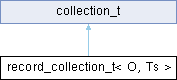

record_collection_t< O, Ts > Struct Template Reference
Collects records generated by an inference algorithm into an empirical posterior distribution over records and output values. More...
#include "query.hpp"
Inheritance diagram for record_collection_t< O, Ts >:

Public Member Functions | |
| record_collection_t (record_collection_t< O, Ts... > &&other) | |
| record_collection_t (std::vector< record_t< Ts... >> v, std::vector< O > o, Categorical c) | |
| std::unordered_set< std::string > | all_addresses () |
| template<typename V > | |
| value_collection_t< V > | at (std::string address) |
| template<typename RNG > | |
| std::shared_ptr< O > | sample_output (RNG &rng) |
| Samples a single output value of the probabilistic program from the empirical posterior. More... | |
| template<typename RNG > | |
| std::shared_ptr< std::vector< O > > | sample_output (RNG &rng, size_t n) |
| Samples n output values of the probabilistic program from the empirical posterior. More... | |
 Public Member Functions inherited from value_collection_t< record_t< Ts... > > Public Member Functions inherited from value_collection_t< record_t< Ts... > > | |
| value_collection_t (std::vector< record_t< Ts... > > v, Categorical c) | |
| value_collection_t (value_collection_t< record_t< Ts... > > &&other) | |
| value_collection_t< record_t< Ts... > > & | filter (Callable f) |
| Filter the vector of posterior samples through a callable. More... | |
| value_collection_t< record_t< Ts... > > & | map (Callable f) |
| Map the vector of posterior samples thorugh a callable. More... | |
| double | prob_at (size_t ix) |
| Returns the empirical probability of the sample at the specified index. More... | |
| record_t< Ts... > | reduce (Callable fn) |
| Reduce the vector of posterior results to a scalar using a callable. More... | |
| std::shared_ptr< record_t< Ts... > > | sample (RNG &rng) |
| Samples single value from the empirical posterior. More... | |
| std::shared_ptr< std::vector< record_t< Ts... > > > | sample (RNG &rng, size_t n) |
| Samples n values with replacement from the empirical posterior. More... | |
| size_t | size () |
| Public Member Functions inherited from collection_t | |
| collection_t (Categorical c) | |
Public Attributes | |
| std::vector< O > | _o |
| Public Attributes inherited from value_collection_t< record_t< Ts... > > | |
| std::vector< record_t< Ts... > > | _v |
| Public Attributes inherited from collection_t | |
| Categorical | _c |
Detailed Description
template<typename O, typename... Ts>
struct record_collection_t< O, Ts >
Collects records generated by an inference algorithm into an empirical posterior distribution over records and output values.
- Template Parameters
-
O the output type of the probabilistic program to be queried Ts the types in the probabilistic program
The documentation for this struct was generated from the following file:
- lib/query.hpp